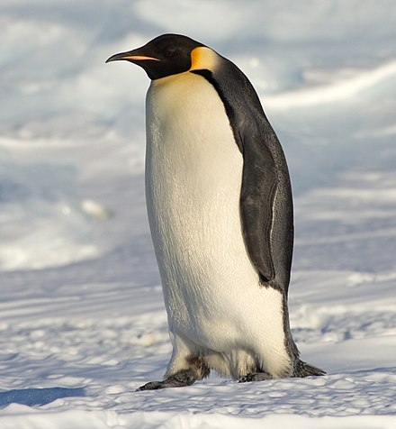
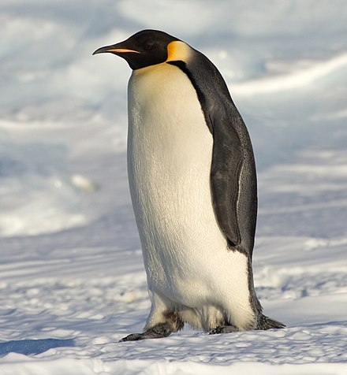

Biology
The Aptenodytes Forsteri, commonly known as the Emperor Penguin, is the largest of all penguin species and lives solely in Antarctica. The sides of the creature are black, along with the back and the head. This sharply contrasts from the white belly and yellow neck that they have. Despite having wings, it is flightless, but can swim extremely well in the frigid antarctic waters. Its diet mostly consists of fish and other small sea creatures it can find, and is the only penguin species to breed during the antarctic winter.
 
